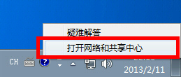
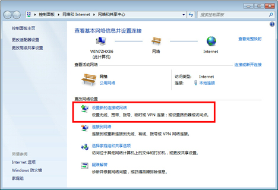

L2TP/IPSec VPN设置教程
Windows
在此教程中，我们使用的是 Windows 7 的界面。Windows XP 和 Windows8 是相似的。
1. 初始配置 (只需在第一次时安装一次)
在 Windows 界面的右下角右击网络图标，并点击 "打开网络和共享中心"。

在 "网络共享中心" 点击 "建立一个新的连接或网络" 。

选择 "连接到工作区" 。

选择 "使用我的 Internet 连接 (VPN)" 。

在 Internet 地址 中填入购买 FZSS VPN 获得的（IP）地址

在出现用户名和密码的弹出窗口，在用户名和密码字段输入 你的用户名 和你的密码。并在 "记住此密码" 前打勾。

当 "连接已经可以使用" 消息出现，点击 "关闭" 按钮。请勿点击 "现在连接" 按钮。

到 "网络和共享中心" 并点击 "更改适配器设置" 。

当前定义的 VPN 连接设置被列出来了。右击你在上一步创建的图标，并点击 "属性" 。

在属性这一屏，切换到 "安全" 标签。(在 Windows XP 中，切换到 "网络" 标签。) 在 "VPN 类型" 的下拉列表中选择 "使用 IPsec 的第 2 层隧道协议 (L2TP/IPSec)" 。

下一步，点击 "高级设置" 按钮。(在 Windows XP 中，在 "安全" 标签里点击 "IPsec 设置" )
显示下一屏。点击 "使用预共享密钥作身份验证" 并在 "密钥" 字段输入 "fzssvpn" (7 个字母)。

上述配置完成后，点击 "确定" 按钮两次，以关闭 VPN 连接设置的属性屏幕。
2. 连接到 VPN 服务器
双击已建立的 VPN 连接设置，以下屏幕将出现。
如果您在前面的步骤中启用了密码的保存选项， "用户名" 和 "密码" 字段应被自动填写。如果没有，在 "用户名" 和
"密码" 字段输入你的账号与密码 。

点击 "连接" 按钮，开始 VPN 连接尝试。
当正试图建立 VPN 时，下面屏幕显示状态。如果发生错误，请确认您的设置，并确保 VPN 的类型是 "L2TP/IPsec" ，并正确指定预共享密钥。

如果成功建立 VPN 连接， VPN 连接图标出现在屏幕上，当您单击 Windows 屏幕右下角的网络图标会将其列出。 "VPN 连接" 图标的状态应该是 "已连接" 。

顺便说一下，你可以从现在开始，只需简单点击此 VPN 图标，即可启动 VPN 连接。
3. 通过 VPN 中继享受互联网
当 VPN 建立时，所有到互联网的通讯将通过 VPN 服务器转发。

当你的 VPN 连接建立时，享受 YouTube、Facebook 或 Twitter 吧。
Facebook、Twitter 和 Gmail 使用 HTTPS (SSL) 加密的通信协议。无论是否通过
VPN，没有人可以窃听这些加密通信。
Mac
在该指南中，每个屏幕截图均来自 Mac OS X 山狮版。Mac OS X 其他版本的配置方法类似，但在用户界面上会有少许不同。
这些截屏来自 Mac OS X 的英文版。如果你使用其他语言，你可能通过参考以下指南很轻松地配置。
1. 初始配置 (只需在第一次时安装一次)
在 Mac 界面的右上角点击网络图标。点击菜单中的 "Open Network Preferences..." 。

点击网络配置屏幕上的 "+" 按钮。

在 "Interface" 选择 "VPN"，"VPN Type" 选择 "L2TP over IPsec" 并点击 "Create" 按钮。

一个新的 L2TP VPN 配置将被创建，并且配置屏幕会出现。
在此屏幕上，你需要在 Server Address 一项中填写 FZSS VPN 的（IP）地址。

下一步，点击 "Authentication Settings..." 按钮。
验证屏幕会出现。在 "Password" 字段输入"你的密码" 。在 "Shared Secret" 字段填写 "fzssvpn" (7 个字母)。在你输入之后，点击 "OK" 按钮。

再回到前一屏，在 "Show VPN status in menu bar" 前打勾并点击 "Advanced..." 按钮。
高级设置将出现。在 "Send all traffic over VPN connection" 前打勾并点击 "OK" 按钮。

在 VPN 连接设置屏幕，点击 "Connect" 按钮开始 VPN 连接。
2. 开始一个 VPN 连接
您可以在任何时候通过点击 "Connect" 按钮开始一个新的 VPN 连接。您也可以通过点击菜单栏上的 VPN 图标点击发起一个 VPN 连接。

在 VPN 连接建立以后， VPN 连接设置屏幕将成为如下 "Status" ，即 "Connected" 。您 VPN 的私人 IP 地址和连接的持续时间会显示在屏幕上。

3. 通过 VPN 中继享受互联网
当 VPN 建立时，所有到互联网的通讯将通过 VPN 服务器转发。

当你的 VPN 连接建立时，享受 YouTube、Facebook 或 Twitter 吧。
Facebook、Twitter 和 Gmail 使用 HTTPS (SSL) 加密的通信协议。无论是否通过 VPN
，没有人可以窃听这些加密通信。
iOS
To be developed.
Android
To be developed.